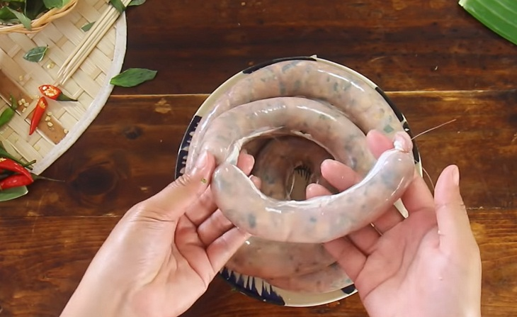
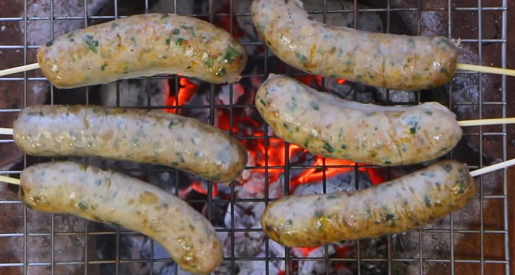

Trở về trang chủ
Công thức dồi sụn nướng
Công thức của web Điện máy xanh
Nguyên liệu
- Sụn heo 30 gr
- Mỡ heo 100 gr
- Thịt heo xay 300 grvv
- Lòng non 400 gr (khoảng 1 bộ)
- Hành tây băm 30 gr
- Rau húng quế 30 gr
- Rau răm và hành lá 25 gr
- Đậu phộng rang 30 gr (không vỏ)
- Đường 3 muỗng canh
- Hạt nêm 2 muỗng canh
- Nước mắm 3 muỗng canh
- Rượu mai quế lộ 2 muỗng canh
- Dầu điều 1 muỗng canh
- Tiêu sọ 2 muỗng cà phê
Hướng dẫn
-
Bạn lộn trái lòng non, rồi tiến hành tuốt hết dịch vàng với nước và
muối, bóp đi bóp lại để loại bỏ chất nhầy bên trong. Đồng thời, nếu
muốn khử bớt mùi hôi tanh của lòng non, bạn có thể rửa bằng nước cốt
chanh và giấm, hoặc rượu gừng trước khi rửa sạch bằng nước nhiều lần.
-
Sau khi rửa sụn và mỡ heo, dùng dao xắt nhỏ sụn đồng thời cắt mỡ heo
thành từng miếng nhỏ. Tiếp đó, băm nhuyễn hai nguyên liệu này với
nhau.

-
Lấy một bát lớn, trộn tất cả các nguyên liệu đã được chuẩn bị với
nhau: sụn, mỡ heo, hành tây, húng quế, rau răm, đậu phộng giã nhỏ,
đường, nước mắm, hạt nêm, rượu mai quế lộ, dầu điều, tiêu sọ. Đảo trộn
và để hỗn hợp thấm đều khoảng 30 phút.
-
Bạn tiến hành cột 1 đầu của bộ lòng, dùng miệng phễu nhét vào miệng
lòng, rồi dùng 1 tay giữ chặt miệng phễu, còn tay kia múc hỗn hợp nhân
cho vào đầu phễu. Dùng đũa, hoặc thanh hình trụ dài, nhấn hỗn hợp
xuống lòng non. Sau khi nhồi xong, dùng chỉ thực phẩm để chia và cột
lòng theo từng đoạn vừa ăn

-
Bắt nồi nước lên bếp, cho dồi vào luộc khoảng 5 - 7 phút. Lấy dồi ra,
để nguội, cắt từng khúc rồi xiên vào que trước khi nướng.
-
Chuẩn bị bếp than hồng, đặt vỉ nướng và xếp dồi sụn lên. Khi nướng,
trông thấy dồi chuyển sang màu nâu đỏ và có phần hơi cháy xém, nghĩa
là ăn được rồi nhé!

-
Thành phẩm